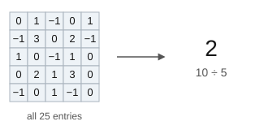
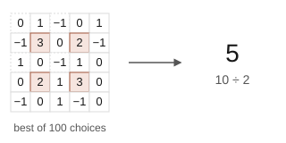
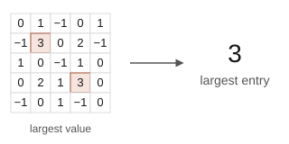
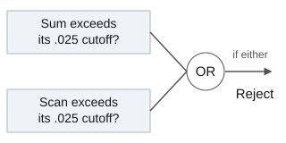

In gene expression data, each row can represent a gene and each column a tissue sample. A group of genes may be more active in some samples than in others, but noise in the measurements can make this pattern difficult to identify. Sparse submatrix detection asks whether there is enough evidence to distinguish such a group from random variation.
We examine this question in a simpler setting, where a selected group of matrix entries has a higher mean than the rest. By applying four detection methods to the same simulated matrices, we compare how their performance depends on the size of this group and the strength of the mean shift. We also study recovery, which requires identifying the affected rows and columns exactly.
We observe an \(n\times n\) matrix with independent entries and test
Here, \(S\) and \(T\) are unknown sets of \(k\) rows and \(k\) columns, and \(\mu>0\) is the mean shift. The affected rows and columns need not be consecutive.
1. Interactive matrix
Even a matrix containing only noise will have some unusually large entries. A few red cells are therefore not enough to conclude that a signal is present. In our model, a signal raises the mean of the affected entries, though individual values may still be small or negative. The detection methods assess whether this group of entries provides evidence beyond what noise alone would produce.
The controls allow us to vary the matrix size \(n\), block size \(k\), and mean shift \(\mu\). Increasing \(\mu\) raises the mean of each affected entry, while increasing \(k\) increases the number of entries carrying the signal. Although we call this group a block, its rows and columns need not be consecutive.
Using the example: turn off the planted block and select New sample to see the patterns that noise alone can produce. Then restore the block and increase \(\mu\), keeping its location hidden until you have compared the test decisions with your own impression of the matrix.
16 × 16 matrixSeed 236
ColumnsRows
−3 or less3 or more
The color scale is fixed. Hover over an entry to read its value.
Test results
Significance level \(.05\)
Test
Statistic
Cutoff
Decision
Sum
—
—
—
Max
—
—
—
Scan
—
—
—
Sum or scan Level \(.025\) for each component—
The scan is computed exactly when the matrix is small enough.
Interpreting the decisions: each test compares a different summary of the same matrix with a cutoff. A “Reject” decision indicates evidence against the model containing only noise; “Do not reject” means the evidence was insufficient. Since either decision can be wrong on an individual draw, section 3 evaluates the methods over many independently generated matrices.
The sum and max use exact null cutoffs. Here the scan uses the conservative cutoff \(\sqrt{2\log(M/.05)}\), where \(M=\binom{n}{k}^{2}\). The simulations below use a calibrated scan cutoff and estimate power over repeated draws.
2. Detection and recovery
Detection concerns the presence of a signal, while recovery concerns its location. The four detectors differ in how they use the same observations. Adding many weak shifts may reveal a pattern that would be missed by a test based on the largest entry alone.
How the detection methods work
The first three diagrams apply the tests to the same \(5\times5\) example with \(k=2\). The shaded cells show which entries contribute to each statistic. These statistics use different cutoffs, so their sizes alone do not determine which test rejects.
Sum test

Adding all entries and dividing by \(n\) allows the sum test to accumulate many small shifts. Its performance also depends on how much noise comes from the unaffected entries.
Scan test

The scan compares every choice of \(k\) rows and \(k\) columns, taking the largest sum divided by \(k\). This search can exclude much of the unaffected noise, though it is more expensive to compute.
Maximum test

The maximum test uses only the largest entry. It can detect a sufficiently strong individual value, but may overlook a block whose entries are only moderately elevated.
Combined sum and scan

The combined test rejects when either the sum or the scan rejects. Each component uses level .025, so the probability of a false positive for the combined test is at most .05.
Signal strength and reliable detection
The conditions below describe how strong a signal must be, relative to the block size, for detection to become reliable as \(n\) grows. They assume \(k\to\infty\) and \(k=o(n)\), so they should not be interpreted as exact cutoffs for the finite matrices in the example.
The scan cost above is for summing every candidate block separately. The demo computes the same statistic by enumerating row sets and selecting the best columns for each.
Butucea and Ingster give the sum and scan conditions. The max condition is a sufficient bound from Ma and Wu, rather than a complete description of its power for every block size. Combining the sum and scan allows detection under either condition.
For \(k\approx n^\gamma\), the sum attains the detection rate when \(\gamma>2/3\), since a large block supplies enough total signal without searching for its location. When \(\gamma<2/3\), the scan can detect weaker signals by excluding much of the unaffected noise. These comparisons concern rates as \(n\) grows, rather than the power ordering at a fixed matrix size.
Exact recovery
A successful detector need not know which rows and columns carry the signal. Exact recovery requires all of these indices to be correct, with even one mistake counted as an error. In the exhaustive approach studied by Butucea, Ingster and Suslina, we retain the block with the largest sum. The true block must therefore beat every alternative, including candidates that differ by only one row or column.
Spectral recovery uses singular vectors instead of enumerating blocks. The mean matrix \(\mu\mathbf{1}_S\mathbf{1}_T^{\mathsf T}\) has rank one, so Cai, Liang and Rakhlin use leading singular vectors to form row and column scores. Soft-thresholding entries first can help for smaller blocks. Our experiments give these methods \(k\) and select the \(k\) largest scores.
Start with the matrix
Find its leading singular vectors
Score each row and column
Keep the top \(k\) of each
The leading singular vectors describe an estimated pattern across rows and columns. For the soft-thresholded version, we first shrink the matrix entries toward zero and then carry out the same steps.
Statistical and computational boundaries
These diagrams compare the signal needed for detection and recovery. Write \(k\asymp n^\gamma\) and \(\mu\asymp n^{-\beta}\). Moving right increases the block size, while moving up weakens the signal. The diagrams compare exponents and omit logarithmic factors.
Redrawn from Figure 1 of Cai, Liang and Rakhlin (2017), using our notation. Their computational lower bound concerns the broader sub-Gaussian noise model.
For detection, the statistical boundary is \(\beta^*=\max\{\gamma/2,2\gamma-1\}\) and the computational boundary is \(\beta^\sharp=\max\{0,2\gamma-1\}\). Below the latter, efficient tests succeed. Between the lines, reliable detection is statistically possible, but Ma and Wu's model has a computational barrier under the planted-clique hypothesis. The gap closes when \(\gamma>2/3\), where the sum attains the detection rate.
Recovery has a different comparison. Its statistical exponent boundary is \(\gamma/2\), while the computational boundary is \(\max\{0,\gamma-1/2\}\). For every fixed \(0<\gamma<1\), these leave a gap. Thus the efficient sum can detect a large block even when locating every affected row and column remains harder. The hardness statements in both papers are conditional and concern their alternative and noise classes, which are broader than the exact-size, common-mean Gaussian model used in our demo.
3. Simulation results
For each choice of \((n,k,\mu)\), we generate \(300\) matrices and apply the methods to the same data. We compute exact scans at \(n=16\). At \(n=512\), we compare only the efficient methods.
Detection
Figure 3. Detection power as \(\mu\) increases. The top row uses \(n=16\) and \(k=3,5,8\). The bottom row uses \(n=512\) and \(k=12,42,107\). The horizontal ranges differ between panels.
The dashed curve gives the sum's exact Gaussian power, \(1-\Phi(z_{.95}-\mu k^2/n)\), where \(z_{.95}=\Phi^{-1}(.95)\). Each test uses level \(.05\), with \(.025\) per component for the combined test. The scan cutoff uses \(1{,}500\) separate noise matrices.
At \(n=16\), \(k=3\), and \(\mu\approx1.73\), the scan has power \(.72\) versus \(.21\) for the sum. At \(n=512\), \(k=107\), and \(\mu\approx.13\), the sum reaches \(.90\) while the max stays near \(.05\). Scanning helps for the smaller block by excluding many unaffected entries. For the larger block, adding many weak shifts gives the sum power even when no individual entry stands out.
Recovery
Figure 4. Probability of at least one incorrect row or column. Lower error is better. All recovery methods are given \(k\).
The dashed lines mark the asymptotic recovery reference from Butucea, Ingster and Suslina, specialized to square blocks
This reference does not predict an exact finite-sample cutoff for spectral recovery. Soft thresholding uses \(t=\sqrt{\log(n/k^2)}\) when \(k^2<n\).
At \(n=16\), \(k=3\), and \(\mu\approx2.16\), the scan detects the signal in \(97\%\) of runs, but exhaustive recovery makes an error in \(20\%\) and spectral recovery in \(51\%\). At \(n=512\), \(k=12\), and \(\mu\approx2.08\), soft thresholding reduces recovery error from \(.99\) to \(.22\).
Exact scanning is feasible only for the smaller matrices in these experiments. Differences of a few percentage points may be due to sampling variation, so the plots are most useful for comparing the broader patterns across block sizes.